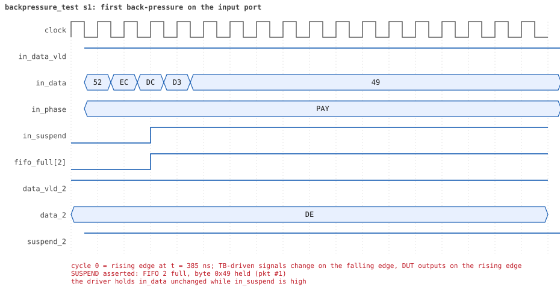
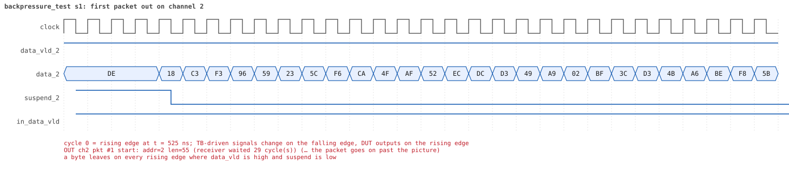
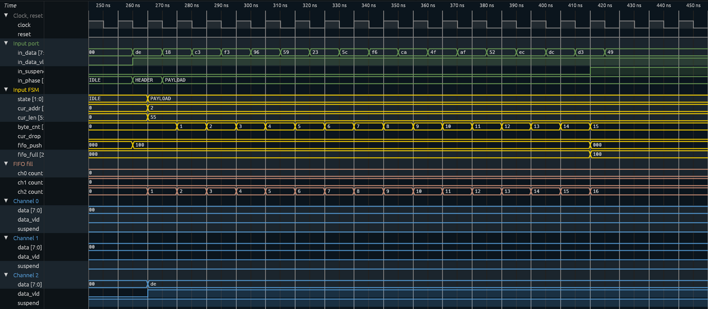

Reading a simulation: logs, timelines and waves¶
Every run writes a log that tells its story in order: what the test is doing,
what every component of the environment does with each packet, and what happens
inside the router. make sim-report bundles the logs of a regression into one
folder per run, with a timeline extracted from the log, the waves, and a few
wave pictures of the moments worth looking at. This page explains the log
lines, the report and how to get the waves into a viewer.
The shape of a log¶
The project runs at +UVM_VERBOSITY=UVM_MEDIUM (set in run.f): one line per
event, no packet tables. UVM_HIGH adds the full Packet is / Packet
collected tables of the course and the HBUS lines of the DUT tracer.
UVM_INFO tests/base_test.sv(94) @ 0: uvm_test_top [TEST] === backpressure_test seed 1 ===
UVM_INFO tests/base_test.sv(99) @ 0: uvm_test_top [TEST] STAGE: 1. slow receivers (channel_rx_slow_seq): 6 packets of 40..63 bytes fill the 16-byte FIFOs
UVM_INFO ...yapp_router_tracer.sv(148) @ 50: reporter [DUT] RESET released: router_en=1 maxpktsize=63
UVM_INFO ...yapp_tx_driver.sv(76) @ 50: uvm_test_top.tb.yapp.agent.driver [yapp_tx_driver] TX pkt #1: addr=2 len=55 parity=good delay=20
UVM_INFO ...yapp_router_tracer.sv(213) @ 265: reporter [DUT] IN pkt #1 header: addr=2 len=55 -> channel 2
UVM_INFO ...yapp_router_tracer.sv(251) @ 425: reporter [DUT] SUSPEND asserted: FIFO 2 full, byte 0x49 held (pkt #1)
UVM_INFO ...yapp_router_tracer.sv(289) @ 565: reporter [DUT] OUT ch2 pkt #1 start: addr=2 len=55 (receiver waited 29 cycle(s))
UVM_INFO ...yapp_router_tracer.sv(257) @ 575: reporter [DUT] SUSPEND released after 15 cycle(s)
UVM_INFO ...yapp_router_tracer.sv(228) @ 975: reporter [DUT] IN pkt #1 complete: addr=2 len=55 parity=ok forwarded, 57 bytes in 72 cycles (held 15)
UVM_INFO ...yapp_tx_driver.sv(80) @ 980: uvm_test_top.tb.yapp.agent.driver [yapp_tx_driver] TX pkt #1 accepted by the DUT
UVM_INFO ...router_scoreboard.sv(121) @ 1345: uvm_test_top.tb.router_module.scoreboard [router_scoreboard] ch2 pkt matched: addr=2 len=55 (1 matched so far)
UVM_INFO tests/base_test.sv(112) @ 6335: uvm_test_top [TEST] === backpressure_test seed 1: PASSED (0 UVM_ERROR, 0 UVM_FATAL) ===
Three kinds of lines carry the story:
| Who | Id | Lines | Where it is written |
|---|---|---|---|
| The test | [TEST] |
=== <test> seed <n> === banner at the start, STAGE: … at every step of the test, === … PASSED/FAILED (…) === at the end |
base_test (stage(), start_of_simulation_phase, final_phase); every test calls stage() |
| The router | [DUT] |
RESET, IN pkt #n header / complete, SUSPEND asserted / released, OUT chX pkt #n start / done, ERROR pulse, CONFIG; at UVM_HIGH also HBUS write / read with the register name and FIFO x full / has room |
yapp_router_tracer, a testbench module bound into the DUT (yapp_project/tb/yapp_router_tracer.sv); it watches the ports and the input FSM, the RTL is untouched |
| The environment | the component's type name, as in the course | TX pkt #n: … / TX pkt #n accepted by the DUT (driver), RX pkt #n on the input: … (monitor), chX RX pkt #n: … (channel monitor), chX: packet consumed (channel driver), Executed WRITE/READ … and Collected … (HBUS), chX pkt matched: … (scoreboard), Packet forwarded / dropped … (reference model), Starting clock … (clock and reset) |
the UVCs under yapp_project/uvc/ |
The [DUT] lines are the ones that tell you what the hardware did, as opposed
to what the environment sent or expected: a header that will be dropped says so
(-> DROP (illegal address 3)), a held byte names the full FIFO, a packet
leaving a channel says how long the receiver kept it waiting, an error pulse
says how many cycles after the bad packet it came.
Every message with a number in it has a fixed format, so a script (or grep)
can follow one packet from the driver (TX pkt #3) to the router (IN pkt #3),
the channel (OUT ch1 pkt #2) and the scoreboard (ch1 pkt matched).
The report¶
make regress ONLY=yapp_project WAVES=1 # run, record waves and the signal trace
make sim-report ONLY=yapp_project # bundle: build/sim/report/ + regression_report.zip
make sim-report ONLY=yapp_project OUT=yapp_project/regression # refresh the committed report
The report of the project (17 directed tests with 4 seeds and 4 random tests
with 8, 100 runs) is committed in
yapp_project/regression/, so the logs, timelines, waves and pictures can be
read on GitHub or in the ZIP without running anything; index.md is the
entry point, runs.json the same table as data. The site shows it as
Regression results: one page per test with its
seeds, the links to every log, timeline and waveform, the stages and the
pictures of its first seed; the project map shows the same under every test
card. A committed report leaves out the files that only repeat the log or the
waves (all_logs.log, timeline.csv, signals.csv), and the timeline of a
very long run (hbus_sweep_test, 11 000 events) keeps only the test, DUT,
HBUS and report events.
scripts/sim_report.py reads build/sim/<bench>/logs/<test>_s<seed>.log and
writes build/sim/report/:
report/
index.md every run: result, sim and wall time, packets in / forwarded / dropped,
packets out per channel, suspends, errors, links; failures first
runs.json the same per run, as data (the site pages and the map read it)
all_logs.log every log in one file, each under a banner (local reports only)
coverage.md the functional coverage merged over every run: holes,
every bin with its hits and tests, what each test adds
coverage.json the same data (the site page and the project map read it)
coverage_html/<bench>/ genhtml: the covergroup sources with a count per bin
(docs/coverage/<bench>/ for the committed report)
yapp_project_tb/
merged.dat, merged.info the merged coverage database (verilator_coverage, lcov)
backpressure_test_s1/
backpressure_test_s1.log the log, named after the test and the seed
timeline.md summary · stages · pictures · every event in order
timeline.csv the same events: time, severity, who, id, event (local reports only)
backpressure_test_s1.fst the waves
signals.csv the per-cycle signal trace (see below; local reports only)
wave_*.svg the pictures
backpressure_test_s2/
...
timeline.md starts with the verdict and a summary counted from the log
(packets sent, forwarded, dropped and why, packets out per channel, scoreboard
matches, back-pressure events, error pulses, HBUS accesses), lists the stages
of the test with their times, shows the pictures, and ends with the full
timeline: one row per event, UVM_ERROR rows marked.
coverage.md comes from the coverage database every run writes
(build/sim/<bench>/coverage/<test>_s<seed>.dat); how to read it is in
Functional coverage.
The pictures¶
With WAVES=1 the tracer also writes trace/<test>_s<seed>.csv: one row per
clock cycle, sampled on the falling edge, with the input port, the three
channels, the HBUS port, error, the live configuration and the state of the
input FSM. sim_report.py finds the first occurrence of each interesting event
in the log and draws a window of cycles around it with the same SVG drawer as
the timing diagrams of the specification:
| Picture | When it is drawn | What it shows |
|---|---|---|
wave_reset.svg |
always | reset, the first idle cycles, router_en and maxpktsize after reset |
wave_first_packet_in.svg |
a packet entered the router | header, payload and parity on in_data with their in_phase (HDR / PAY / PAR), in_suspend, the input FSM state, the target FIFO filling up |
wave_first_packet_out.svg |
a packet left on a channel | data_x, data_vld_x, the receiver's suspend_x |
wave_first_suspend.svg |
in_suspend rose |
the held byte on in_data, the full FIFO, the channel draining it |
wave_first_error_pulse.svg |
error pulsed |
the end of the bad-parity packet and the pulse 1..10 cycles later |
wave_first_hbus_write.svg, wave_first_hbus_read.svg |
the host port was used | hen, hwr_rd, haddr, hdata for one write and one read |
Testbench-driven signals are drawn changing on the falling edge, DUT outputs on the rising edge, exactly as the protocol works. A window is at most 30 cycles; a longer packet is cut and the note under the picture says so.
Below, the first packet of backpressure_test (seed 1): the receiver is slow,
the FIFO of channel 2 fills up and the router holds the driver with in_suspend.

And the same packet leaving the router on channel 2:

The waves¶
<test>_s<seed>.fst is the complete design, every signal. Open it with
- GTKWave (Windows, Linux, macOS):
gtkwave backpressure_test_s1.fst, then draghw_top.in0,hw_top.dutandhw_top.ch2into the viewer. The[DUT]times oftimeline.mdare the rising edges to jump to. - Surfer (
surfer file.fst, also available as a web app), or the VaporView extension of VS Code (installed in the Codespace): open the file from the Explorer. - From a lab directory,
make waves TEST=<test>starts whichever viewer is installed.
signals.csv is the same information for the port signals in a form a
spreadsheet or a script can read: one row per cycle.
A ready signal layout for Surfer¶
yapp_project/tb/yapp_router.sucl is a Surfer command file that opens the
signals of the router in ten groups, one color per group, buses in hex, the
FSM state and in_phase by name, plus the two memories of the spec, folded.
Variable names are full paths (Settings → Variable names → Global):
| Group | Signals | Scope |
|---|---|---|
| Clock, reset | clock, reset |
hw_top |
| Input port | in_data, in_data_vld, in_suspend, in_phase |
hw_top.in0; in_phase from hw_top.dut.u_tracer |
| Input FSM | state, cur_addr, cur_len, byte_cnt, cur_drop, fifo_push, fifo_full |
hw_top.dut.u_input_fsm |
| FIFO fill | ch0 count … ch2 count: bytes waiting in each channel FIFO |
hw_top.dut.g_ch[c].u_ch.u_fifo.count |
| Channel 0 / 1 / 2 | data, data_vld, suspend |
hw_top.ch0 … ch2 |
| Error | error, pkt_done, pulses owed (sched: bit k = a pulse k cycles from now) |
hw_top.dut, u_error_timer |
| HBUS | hen, hwr_rd, haddr, hdata |
hw_top.hbus0 |
| Config, counters | router_en, maxpktsize, addr0..3_cnt_reg, parity_err_cnt_reg, oversized_pkt_cnt_reg |
hw_top.dut, u_regs |
| Packet memory (folded) | [0] … [63]: the last packet, header first (0x1010, RO) |
hw_top.dut.u_regs.yapp_pkt_mem |
| Scratch memory (folded) | [0] … [255]: written and read over HBUS (0x1100, RW) |
hw_top.dut.u_regs.yapp_mem |
The memories are arrays, and Verilator leaves arrays of more than 32 elements
out of the waves unless told otherwise: scripts/sim.py passes
--trace-max-array 256, so yapp_pkt_mem (64 bytes) and yapp_mem (256
bytes) are in every .fst recorded since. In Surfer they are scopes under
u_regs, one variable per byte; a .fst recorded before has no memories.
Four ways to use it:
- One click. The Waves column of
yapp_project/regression/index.md(and the line under the result in everytimeline.md) opens Surfer's web app with that run's.fstand the layout, both read from GitHub. - A local file in the web app or the desktop Surfer. Open the
.fst, then File → Run command file... and pickyapp_router.sucl. File → Switch file... then moves to another test and keeps the list. - Command line:
surfer backpressure_test_s1.fst -c yapp_project/tb/yapp_router.sucl. - With the view settings too:
yapp_project/tb/yapp_router.surf.ronis the same layout saved as a Surfer state, plus four settings no command can set: Focus highlight → Background, Hierarchy → Tree, Show hierarchy icons on, Fill high values off (and Variable names → Global). Open the.fst, then File → Load state...; the state keeps the waves that are open. The web app does not remember settings between visits, so this is the way to get them back in one step.
The first packet of backpressure_test (seed 1) in this layout: the header
de (HEADER, one cycle) goes to channel 2, ch2 count climbs to 16, the
FIFO is full and in_suspend holds byte 49:

The layout is written by scripts/surfer_layout.py (LAYOUT at the top):
edit it there and run python3 scripts/surfer_layout.py to rewrite the
.sucl (python3 scripts/surfer_layout.py --check <file.fst> says whether every
signal of the layout is in a recording: a signal that is missing does not just
stay empty, the rows after it shift and the groups fall apart, so a renamed RTL
signal must be renamed in LAYOUT too; make sim-report into the repository
runs the same check). For the .surf.ron, run the new .sucl in Surfer, File → Save
state as..., then python3 scripts/surfer_layout.py --state <saved file>
(it puts the four settings of STATE_SETTINGS in). To keep your own
arrangement after changing it in Surfer, use File → Save state as... and
File → Load state... next time (open the .fst first; the state keeps the
waves that are open and brings back the list).
A .sucl or .surf.ron file is never dragged into the Surfer window: a
dropped file is read as waves and fails with UnknownFileFormat.
Which signals to look at¶
Following one packet from the driver to a channel (Surfer: click a scope in the tree, then the signals in the Variables list; Format → Hex on the buses):
| Where | Signals | What they show |
|---|---|---|
hw_top.in0 |
clock, in_data, in_data_vld, in_suspend |
what the YAPP driver puts on the input port (it changes the inputs on the falling edge) |
hw_top.dut.u_tracer |
in_phase |
what the byte now on in_data is: IDLE, HEADER, PAYLOAD, PARITY; changes with in_data, so HEADER lasts exactly the cycle of the header |
hw_top.dut.u_input_fsm |
state, cur_addr, cur_len, cur_drop, fifo_push, fifo_full |
what the router decided, on the rising edge that sampled each byte |
hw_top.ch0 … ch2 |
data, data_vld, suspend |
the packet leaving: the same bytes, in the same order, on the channel addr names |
Why the FSM has no HEADER state. The FSM takes the header while it is in
IDLE: on the rising edge where in_data_vld is high it latches cur_addr and
cur_len from the header and moves to PAYLOAD. So state shows PAYLOAD
half a cycle before the first payload byte is on the bus -- the testbench
drives a byte on the falling edge and the router samples it on the next rising
edge. A real HEADER state would cost a cycle per packet and change the
protocol of the course; in_phase is the readable label, computed in the
testbench (yapp_router_tracer.sv), with the RTL untouched.
Running one test by hand¶
cd yapp_project/tb
make sim TEST=parity_error_test SEED=3 WAVES=1 # log, waves, trace
make sim TEST=parity_error_test SIM_OPTS="+UVM_VERBOSITY=UVM_HIGH" # with the packet tables
grep "\[DUT\]" ../../build/sim/yapp_project_tb/logs/parity_error_test_s3.log
With Xcelium the same [TEST], [DUT] and component lines appear in
xrun.log (make run TEST=…); the seed in the banner comes from +SVSEED,
the signal trace from +trace_csv=<file>.